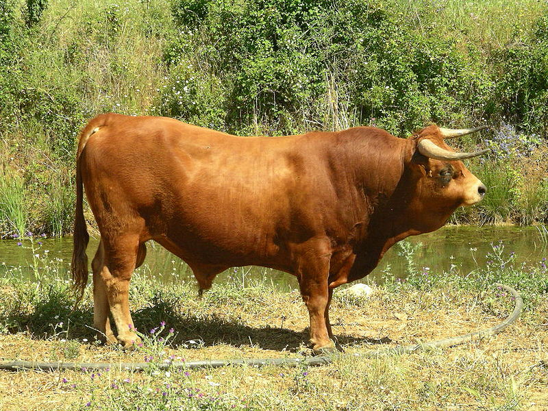

1.Abondance cattle

The Abondance is a mixed race breed of cattle which originated in the high valleys of Haute-Savoie, France.
They are medium-sized, with the female weighing in at between 580 and 680 kilograms (kg) and standing 1.30 metres tall. They are golden brown in color with a white head (apart from the eyes), underside of the abdomen, and extremities of its legs. The bull weighs in at between 645 and 820 kilograms (kg) and stands 1.70 metres tall. Their colour is different, with a chestnut red and a bit of white on the head.
Their milk is rich in both fat and protein, with a good balance between the two. The milk is traditionally used to produce Appellation d'Origine Contrôlée (AOC) cheese such as the reblochon, abondance, tome des Bauges and the beaufort. Typical milk production is 5700 kg per lactation.
This breed of cattle is especially appreciated for its ability to withstand extreme variations in temperature, its fertility, its ease of breeding, its milk, its long life and its meat.
It comes from the Chablais in Haute-Savoie, where it was bred by the monks of the abbaye de Saint-Maurice d'Agaune since the 12th century. It was originally known as the chablaisienne.
2.Arouquesa

The Arouquesa is a cattle breed from Portugal.The Arouquesa breed was granted protected geographical status of DOC (Denominação de Origem Controlada) from the European Commission.
The cows reach a height of 1.23 m (4.0 ft), the bulls 1.36 m (4.5 ft), so the Arouquesas can be described as small. The breed's weight is around 360–430 kg (790–950 lb). Their hair colour is light brown although the males may become a little darker than females. Mucosa and claws are dark coloured. The wide horns are directed forward, first down and then up.
Arouquesas are adapted to the mountains - their hind legs are very muscular. In Portugal today they still work as draught cattle. In the past century oxen often were exported to Great Britain because of their beef. In 1902 Arouquesa beef was the winner of the "Award for the Best Beef" in Paris. Unfortunately this excellent, fine marbled beef today is only known in Portugal. There they count as the best native breed for beef production. The animals are very long-living; 16–18 calves per cow are not uncommon. Most times they practice mother cow husbandry. The animals are very affable but active.
3.Aubrac cattle

The Aubrac is a French breed of domestic beef cattle. It originates on the Plateau de l'Aubrac in the Massif Central in central southern France, from which it also takes its name. It has a wheat-coloured coat and dark hooves, switch, muzzle and eyes.
The Aubrac originated in the early nineteenth century on the Plateau de l'Aubrac in the Massif Central, which spans the modern départements of the Aveyron, the Cantal and the Lozère, in the regions of Auvergne-Rhône-Alpes and Occitanie.
Some limited cross-breeding took place in the twentieth century: with the Mézine, now extinct, 1935–1945; with the Maraîchine, 1945–1955; and with the Parthenaise, 1955–1975.
The conservation status of the Aubrac is not at risk.In 2014 the population was reported at about 170 000 head.
4.Ennstaler Bergscheck

The Ennstaler Bergscheck ("Ennstal Mountain Pied Cattle") is an endangered Austrian breed of domestic cattle. The name comes from the Ennstal, the valley of the Enns River.
The small light Ennstaler Bergscheck was long believed to have originated from the Bavarian Weißkopfscheck ("White-headed Pied Cattle") but recent archaeological discoveries indicate descent from the local cattle of the La Tène period (5th–1st centuries BC). Once they were almost totally foxy red before the white spots in their fur increased, until 75%–80% of the fur was white with only the loin and the side remaining clouded or with fringed spots. The inner ears are coloured. Horns, hooves and mucosas are mostly pigment free.
The breed was once popular as a draft and beef animal but in the 18th century was replaced by Murboden Cattle, Pinzgau Cattle, or Carinthian Blondvieh. The animals are fully developed after two years in the Alps, so they count as the earliest maturing alpine cattle breed. Although they do not become fat their beef is well marbled.
It was thought that the last two cows had been slaughtered in 1986, but some surviving animals were found. Their conservation is organised by the Union for the Conservation of Endangered Domestic Animal Breeds (VEGH) and the Austrian National Union for Gene Reserves. In the year 2004 there were in Austria 65 animals in 6 farms again.
5.Holstein Friesian cattle

Holstein Friesians (often shortened to Holsteins in North America, while the term Friesians is often used in the UK) are a breed of dairy cattle originating from the Dutch provinces of North Holland and Friesland, and Schleswig-Holstein in Northern Germany and Jutland. They are known as the world's highest-production dairy animals.
The Dutch and German breeders bred and oversaw the development of the breed with the goal of obtaining animals that could best use grass, the area's most abundant resource. Over the centuries, the result was a high-producing, black-and-white dairy cow.
With the growth of the New World, markets began to develop for milk in North America and South America, and dairy breeders turned to the Netherlands for their livestock. After about 8,800 Friesians (black pied Germans) had been imported, disease problems in Europe led to the cessation of exports to markets abroad.
In Europe, the breed is used for milk in the north, and meat in the south. Since 1945, European national development has led to cattle breeding and dairy products becoming increasingly regionalized. More than 80% of dairy production is north of a line joining Bordeaux and Venice, which also has more than 60% of the total cattle. This change led to the need for specialized animals for dairy (and beef) production. Until this time, milk and beef had been produced from dual-purpose animals. The breeds, national derivatives of the Dutch Friesian, had become very different animals from those developed by breeders in the United States, who used Holsteins only for dairy production.
Breeders imported specialized dairy Holsteins from the United States to cross with the European black and whites. For this reason, in modern usage, "Holstein" is used to describe North or South American stock and its use in Europe, particularly in the North. "Friesian" denotes animals of a traditional European ancestry, bred for both dairy and beef use. Crosses between the two are described by the term "Holstein-Friesian".